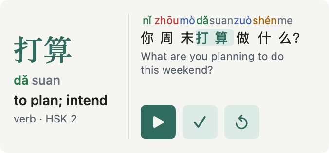

Cí Daily
Chinese · 汉语 · iPhone / iPad / Mac / Apple Watch

Learn with English meanings and tone-colored pinyin. Where annotations are available, cards show tone changes, measure words and character components. Switch between simplified and traditional forms.
为外国汉语学习者设计，以英文界面与释义为主。拼音按声调着色；有相应标注时显示变调、量词和汉字部件，可切换简体与繁体。
Free app with an optional one-time Pro purchase. 免费下载，可选一次性 Pro 内购。